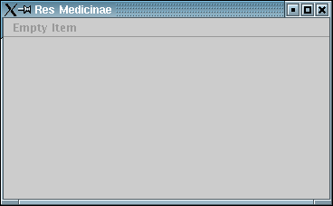

5 Component Lifecycle
Our next aim is to get a graphical output.
The ResMedLib Framework already contains a default view that can be shown using the method show(View v).
For this to become possible, our HelloWorldControllerImpl needs to inherit from a parent controller, ApplicationControllerImpl in our case.
This inheritance also brings along all other features the framework provides.
However, before coming to this point, the new module instance needs to go through a lifecycle process by which also the Framework is setup automatically. This process consists of the following methods:
execute()contextualize(Context c)compose(ComponentManager cm)configure(ConfigurationManager cm)initialize()load(Model m)show(View v)start()suspend()recontextualize(Context c)recompose(ComponentManager cm)reinitialize()resume()stop()finalize()deconfigure()decompose()
For now, we only need to call some (contextualize, configure, initialize, show) of the above lifecycle methods in HelloWorldLauncher.java.
The lifecycle method call show(View v) for displaying a graphical view replaces the former sayHello() method call which had shown a message on console.
The sayHello() method in HelloWorldControllerImpl.java is not called anymore.
Actually, it is superfluous but we just leave it untouched, for now.
By using the above lifecycle methods in this order, every component can be controlled from outside.
That's how it should be.
The component itself knows nothing about its container (in our case HelloWorldLauncher).
This also addresses security issues.
We can now see a graphical view of the component. It is implemented by default in the framework.

| Next | Contents | Next |
Copyright (c) 1999-2002. The Res Medicinae Webmasters. All rights reserved. GNU FDL license. Last Update: 07.05.2002